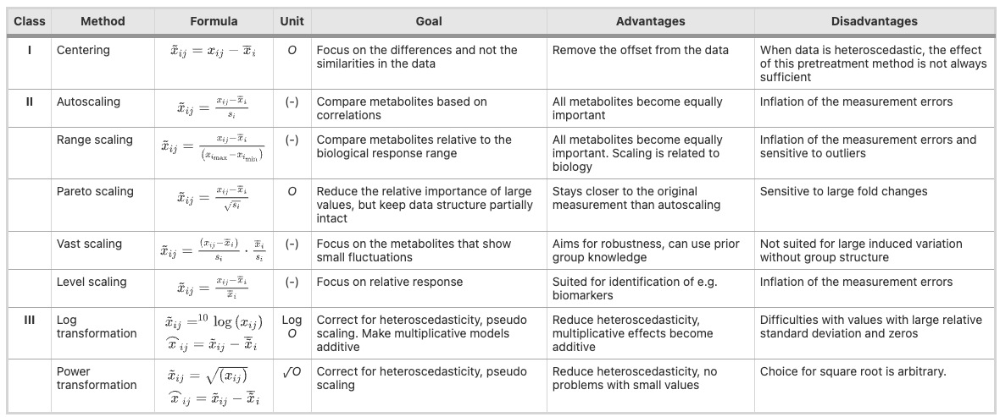
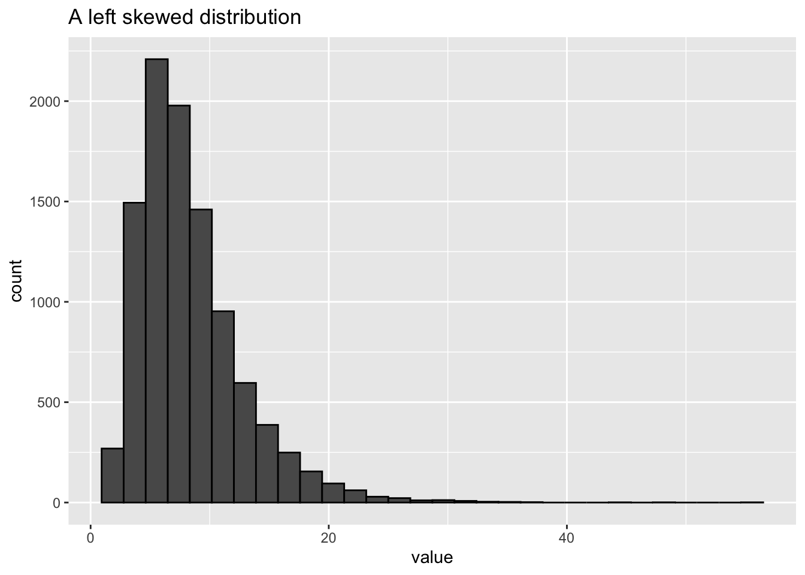
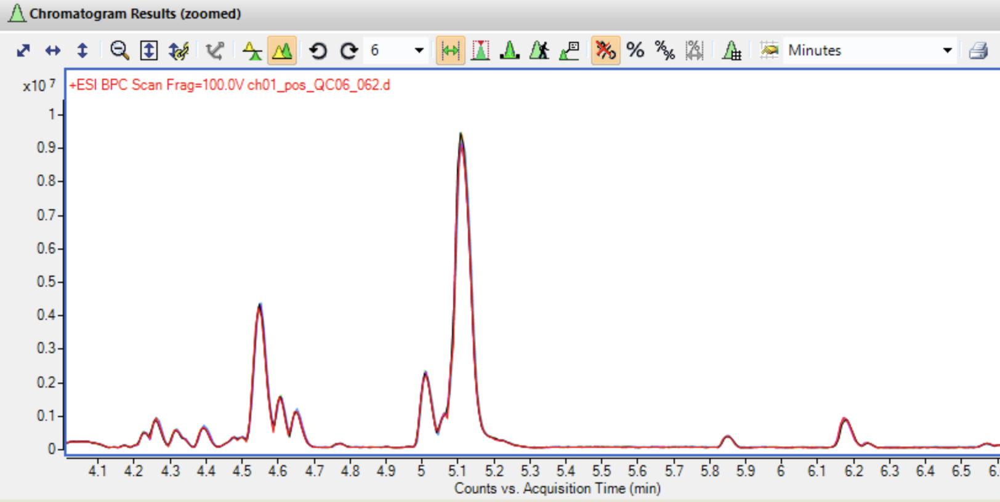
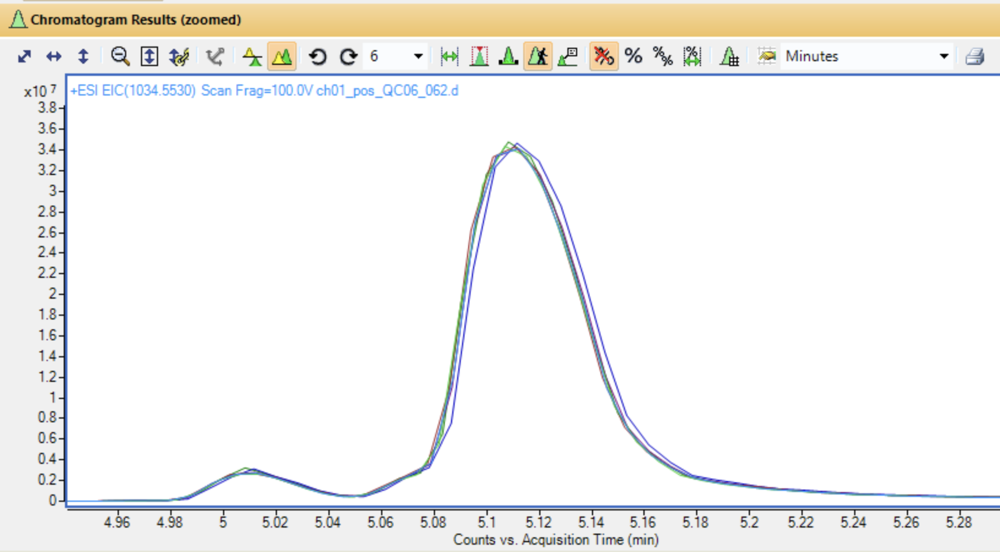
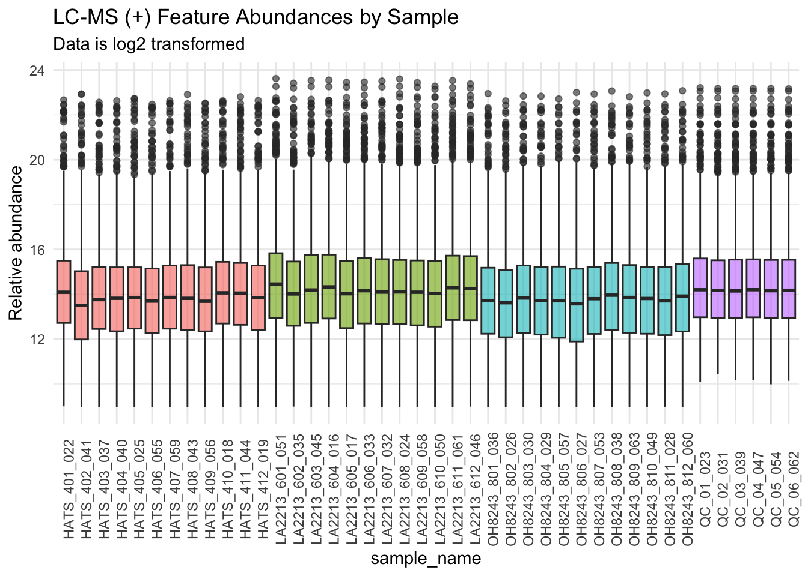
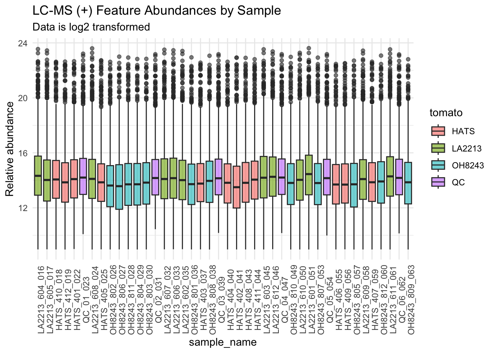
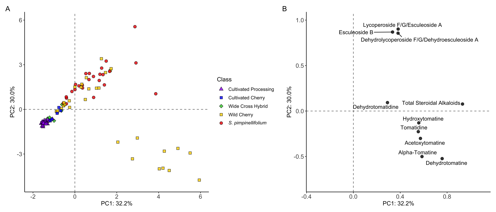
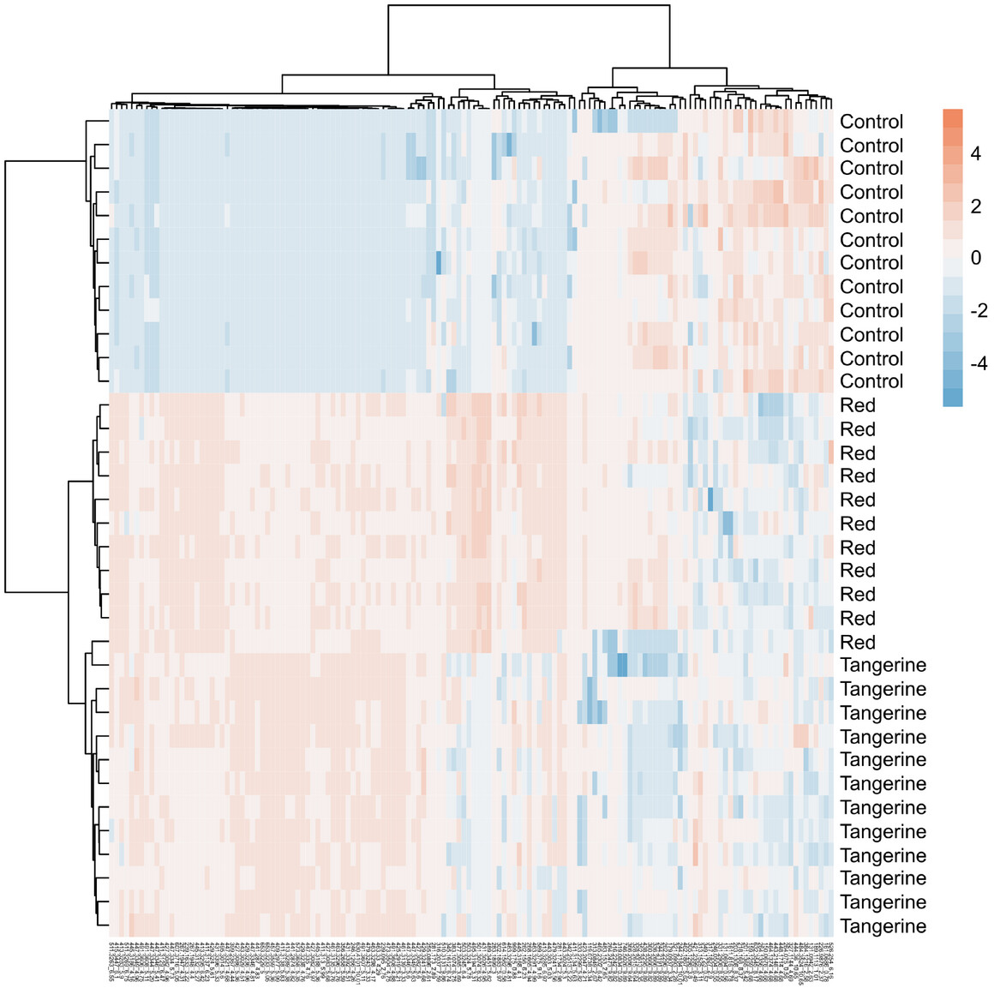

| sample | feature_1 | feature_2 |
|---|---|---|
| control | 10000 | 1000 |
| treatment | 11000 | 2000 |
Analysis of metabolomics data
Now that we have our feature table, what happens next?
- Data normalization/transformation/scaling
- Assess for quality (and make adjustments if needed)
- Univariate analysis (supervised)
- Multivariate analysis (supervised or unsupervised)
Data pre-treatment

Centering
- Centering converts all relative intensities to be centered around zero instead of around mean concentrations
- This is particularly useful in metabolomics given that more intense features are not necessarily more abundant
- I like to center when conducting principal components analysis (PCA, more on this later)


Scaling
- Uses data dispersion as a part of a scaling factor
- Auto scaling: mean = 0, standard deviation = 1 (for each feature)
- Pareto scaling: like auto but scaled to square root of the st dev. The most common scaling used for metabolomics
- In general I find this not necessary and will just log transform (more coming next)
Log transformation - tables
- Reduce heteroscedasicity
- Makes large values proportionally smaller than small ones
- Makes distributions more normal
| sample | log2_feature_1 | log2_feature_2 |
|---|---|---|
| control | 13.29 | 9.97 |
| treatment | 13.43 | 10.97 |
Log transformation - plots
- Log transforming can make your data look more normally distributed
`stat_bin()` using `bins = 30`. Pick better value with `binwidth`.
`stat_bin()` using `bins = 30`. Pick better value with `binwidth`.
Sample wise normalization
- Adjust based on weight or volume (very common)
- Adjust based on intensity of an internal standard (used sometimes)
- Adjust based on total signal (used in older MS papers and for NMR but not really in MS)
Assessing data quality
- How can we go about assessing if our data is of high quality when we have thousands of features and don’t know what to expect?
Overlay your BPCs

Zoom in and look at your BPCs carefully

Look at a single feature for retention time shifting

Create boxplots of features by sample
Ordering by sample groups 
Ordering by run order 
Your QCs should cluster in a PCA
Data analysis can be unsupervised or supervised
Unsupervised (model does not know which samples belong to which groups):
- Principal components analysis (PCA)
- Hierarchical clustering analysis (HCA)
- K-means clustering
Supervised (model knows group composition):
- Univariate (or multivariate) group comparisons
- Predictive/classification models
- Partial least squares regression (PLS-R)
- PLS-discriminant analysis (PLS-DA)
- Random forest
- Artificial neural networks
- Others
Unsupervised: Principal Components Analysis (PCA)
- A dimensionality reduction approach that transforms our data into a new system where principal coordinates (PCs) are drawn maximizing variation in our data.
- Each new PC is orthogonal to the previous one.
- Can interpret points closer together as more similar that those further apart
- The loadings plot helps us understand which features are most influential for each PC
Interpreting PCAs

PCA A) scores and B) loadings (from Dzakovich et al., 2022)
What you should be doing with your PCAs
- Check for samples that are very different from the rest
- Show that your QCs cluster together
- Look for batch effects
- Observe the distance between your samples within a group, and between groups
- See how much variation is being explained by each PC
- Look for clusters in your data
Unsupervised: Hierarchical Clustering Analysis (HCA)
- An approach “cluster” samples based on their distance/similarity
- Find two most similar samples and merge into cluster, and repeat
- Different methods for determining both distance and linkage
- Think of these like a phylogenic tree - samples that are closer together are more similar
- Can cluster samples, features, or both
- StatQuest video on hierarchical clustering
HCA applied to metabolomics

Unsupervised: K-means clustering
- Randomly assigns all samples to be a part of \(k\) clusters
- Calculates centroids and assigns samples to the nearest one
- Iterates until centroids stability or reach some maximum
- Can figure out number of clusters using a scree plot to visualize within cluster sums
- StatQuest explains K-means clustering

Supervised: Univariate testing, the categories
- Two group tests
- t-test (parametric)
- Wilcoxon rank sum test (non-parameric)
- More than two group tests
- ANOVA (parametric)
- Kruskal Wallis test (non-parametric)
- Both followed by post-hoc means separation
Big p, little n: the curse of dimensionality
- With metabolomics, we almost always have more features (p) than samples (n)
- This means we are making a lot of comparisons
- If we want to know if each figure is differentially abundant across two groups, we can do a series of t-tests.
- If we set α = 0.05, then we have a 5% chance for rejecting the null when it is true (false positive, type I error)
- If we do 1000 tests, and each one has a 5% of a false positive, then we would predict to have 50 false positives due to chance alone - features that have p < 0.05 but are not truly different between our groups
Ways to control for multiple testing
- Bonferroni correction: \(α/number\,of\,comparisons\) (very conservative, leads to false negatives)
- Benjamini Hochberg false discovery rate correction: adjust overall error rate to be α (tries to balance false negatives and positives)
Should I use parametric or non-parametric tests?
Multivariate testing in metabolomics
- Multivariate approaches allow the investigation of more than one feature at once
- Approaches can be unsupervised or supervised
- Be sure to select the most appropriate method given the nature of your data and question
Supervised: PLS-DA
- Partial least squares discriminate analysis (PLS-DA) approaches optimize separation between groups
- Two data matrices, X: contains your features, Y: contains group identity